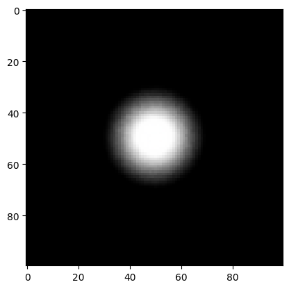
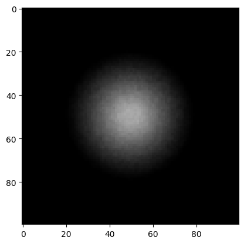

Archive
import mitsuba as mi
import drjit as dr
import matplotlib.pyplot as plt
mi.set_variant('cuda_ad_rgb')
---------------------------------------------------------------------------
ImportError Traceback (most recent call last)
c:\users\meyjoh\repos\vlcompimg\compimg\lib\site-packages\mitsuba\__init__.py in __getattribute__(self, key)
126 _import('mitsuba.mitsuba_ext'),
--> 127 _import('mitsuba.mitsuba_' + variant + '_ext'),
128 )
~\AppData\Local\Programs\Python\Python38\lib\importlib\__init__.py in import_module(name, package)
126 level += 1
--> 127 return _bootstrap._gcd_import(name[level:], package, level)
128
~\AppData\Local\Programs\Python\Python38\lib\importlib\_bootstrap.py in _gcd_import(name, package, level)
~\AppData\Local\Programs\Python\Python38\lib\importlib\_bootstrap.py in _find_and_load(name, import_)
~\AppData\Local\Programs\Python\Python38\lib\importlib\_bootstrap.py in _find_and_load_unlocked(name, import_)
~\AppData\Local\Programs\Python\Python38\lib\importlib\_bootstrap.py in _load_unlocked(spec)
~\AppData\Local\Programs\Python\Python38\lib\importlib\_bootstrap.py in module_from_spec(spec)
~\AppData\Local\Programs\Python\Python38\lib\importlib\_bootstrap_external.py in create_module(self, spec)
~\AppData\Local\Programs\Python\Python38\lib\importlib\_bootstrap.py in _call_with_frames_removed(f, *args, **kwds)
ImportError: jit_init_thread_state(): the CUDA backend is inactive because it has not been initialized via jit_init(), or because the CUDA driver library ("nvcuda.dll") could not be found! Set the DRJIT_LIBCUDA_PATH environment variable to specify its path.
During handling of the above exception, another exception occurred:
AttributeError Traceback (most recent call last)
<ipython-input-1-24b18350307f> in <module>
3 import matplotlib.pyplot as plt
4
----> 5 mi.set_variant('cuda_ad_rgb')
c:\users\meyjoh\repos\vlcompimg\compimg\lib\site-packages\mitsuba\__init__.py in set_variant(self, *args)
341 _reload(_sys.modules['mitsuba.ad.integrators'])
342 else:
--> 343 _import('mitsuba.ad.integrators')
344 del sys
345
~\AppData\Local\Programs\Python\Python38\lib\importlib\__init__.py in import_module(name, package)
125 break
126 level += 1
--> 127 return _bootstrap._gcd_import(name[level:], package, level)
128
129
~\AppData\Local\Programs\Python\Python38\lib\importlib\_bootstrap.py in _gcd_import(name, package, level)
~\AppData\Local\Programs\Python\Python38\lib\importlib\_bootstrap.py in _find_and_load(name, import_)
~\AppData\Local\Programs\Python\Python38\lib\importlib\_bootstrap.py in _find_and_load_unlocked(name, import_)
~\AppData\Local\Programs\Python\Python38\lib\importlib\_bootstrap.py in _call_with_frames_removed(f, *args, **kwds)
~\AppData\Local\Programs\Python\Python38\lib\importlib\_bootstrap.py in _gcd_import(name, package, level)
~\AppData\Local\Programs\Python\Python38\lib\importlib\_bootstrap.py in _find_and_load(name, import_)
~\AppData\Local\Programs\Python\Python38\lib\importlib\_bootstrap.py in _find_and_load_unlocked(name, import_)
~\AppData\Local\Programs\Python\Python38\lib\importlib\_bootstrap.py in _load_unlocked(spec)
~\AppData\Local\Programs\Python\Python38\lib\importlib\_bootstrap_external.py in exec_module(self, module)
~\AppData\Local\Programs\Python\Python38\lib\importlib\_bootstrap.py in _call_with_frames_removed(f, *args, **kwds)
c:\users\meyjoh\repos\vlcompimg\compimg\lib\site-packages\mitsuba/python\ad\__init__.py in <module>
----> 1 from .integrators import *
2 from .optimizers import *
3 from .reparam import *
c:\users\meyjoh\repos\vlcompimg\compimg\lib\site-packages\mitsuba/python\ad\integrators\__init__.py in <module>
23 importlib.reload(globals()[name])
24 else:
---> 25 importlib.import_module('mitsuba.ad.integrators.' + name)
26
27 del name
~\AppData\Local\Programs\Python\Python38\lib\importlib\__init__.py in import_module(name, package)
125 break
126 level += 1
--> 127 return _bootstrap._gcd_import(name[level:], package, level)
128
129
c:\users\meyjoh\repos\vlcompimg\compimg\lib\site-packages\mitsuba/python\ad\integrators\common.py in <module>
6
7
----> 8 class ADIntegrator(mi.CppADIntegrator):
9 """
10 Abstract base class of numerous differentiable integrators in Mitsuba
c:\users\meyjoh\repos\vlcompimg\compimg\lib\site-packages\mitsuba\__init__.py in __getattribute__(self, key)
277 sub_suffix = '' if submodule is None else f'.{submodule}'
278 module = _sys.modules[f'mitsuba.{variant}{sub_suffix}']
--> 279 result = module.__getattribute__(key)
280
281 # Add set_variant(), variant() and variant modules to the __dict__
c:\users\meyjoh\repos\vlcompimg\compimg\lib\site-packages\mitsuba\__init__.py in __getattribute__(self, key)
136 raise AttributeError('Mitsuba variant "%s" not found.' % variant)
137 else:
--> 138 raise AttributeError(e)
139 finally:
140 # Remove those modules from _sys.modules as only the
AttributeError: jit_init_thread_state(): the CUDA backend is inactive because it has not been initialized via jit_init(), or because the CUDA driver library ("nvcuda.dll") could not be found! Set the DRJIT_LIBCUDA_PATH environment variable to specify its path.
class thin_lens_sensor (mi.Sensor):
def __init__(self, props):
mi.Sensor.__init__(self, props)
t = props['to_world']
#print(type(t))
self.to_world = mi.Transform4d(t)
#print(type(self.to_world))
self.foc_len = mi.Float(props['foc_len'])
self.img_dist = mi.Float(props['img_dist'])
self.sen_size = props['sen_size']
self.lens_rad = mi.Float(props['lens_rad'])
self.filmsize = (self.sen_size, self.sen_size)
def sample_ray_differential(self, time, sample1, sample2, sample3, active=True):
#print(type(sample3))
p_a_2d = self.lens_rad * mi.warp.square_to_uniform_disk_concentric(sample3)
#print(type(p_a_2d))
p_a = mi.Point3f(p_a_2d[0], p_a_2d[1], mi.Float(0.0))
p_s = mi.Point3f((sample2[0]-0.5) * self.filmsize[0], (sample2[1]-0.5) * self.filmsize[1], -1.0 * self.img_dist)
p_o = p_s / (-1.0 * self.img_dist) * 1/(1/self.foc_len - 1/self.img_dist)
rayd = mi.RayDifferential3f()
rayd.has_differentials = False
d = dr.normalize(mi.Vector3f(p_o - p_a))
#print(f"d: {type(d)}")
#print(f"p_a: {type(p_a)}")
rayd.d = self.to_world @ d
rayd.o = self.to_world.transform_affine(p_a)#p_a
#rayd.d = dr.normalize(rayd.d)
#rayd.d = self.to_world.transform_affine(rayd.d)
return (rayd, mi.Color3f(1.0, 1.0, 1.0))
def traverse(self, callback):
callback.put_parameter('focal_length', self.foc_len, mi.ParamFlags.Differentiable)
def to_string(self):
return ('thin_lens_sensor[\n'
' foc_len=%s,\n'
' img_dist=%s,\n'
' sen_size=%s,\n'
' lens_rad=%s,\n'
']' % (self.foc_len, self.img_dist, self.sen_size, self.lens_rad))
mi.register_sensor("thin_lens_sensor", lambda props: thin_lens_sensor(props))
g = 8.0
V = 2.0
f = g/(1/V+1)
b = 1/(1/f - 1/g)
scene = mi.load_dict({
'type': 'scene',
'integrator': {
'type': 'prb_projective'
},
'sphere' : {
'type': 'sphere',
'emitter': {
'type': 'area',
'radiance': {
'type': 'rgb',
'value': 1.0,
},
},
'center': [0, 0, g+4],
'radius': 1,
},
'sensor': {
'type': 'thin_lens_sensor',
'to_world': mi.ScalarTransform4f.look_at(origin=[0, 0, 0],
target=[0, 0, 1],
up=[0, 1, 0]),
'foc_len' : f,
'img_dist': b,
'sen_size': 10.0,
'lens_rad': 1.0,
'film': {'type': 'hdrfilm',
'width': 100,
'height': 100,
'rfilter': {'type': 'gaussian'},
'pixel_format': 'rgb',
'component_format': 'float32'},
'sampler': {'type': 'independent', 'sample_count': 512},
}
})
ref_image = mi.render(scene)
plt.figure()
plt.imshow(ref_image)
Clipping input data to the valid range for imshow with RGB data ([0..1] for floats or [0..255] for integers).
<matplotlib.image.AxesImage at 0x235a5c30880>

params = mi.traverse(scene)
params
SceneParameters[
----------------------------------------------------------------------------------------
Name Flags Type Parent
----------------------------------------------------------------------------------------
sensor.focal_length ∂ Float Sensor
sphere.bsdf.reflectance.value ∂ Float UniformSpectrum
sphere.emitter.sampling_weight float AreaLight
sphere.emitter.radiance.value ∂ Color3f SRGBReflectanceSpectrum
sphere.silhouette_sampling_weight float Sphere
sphere.to_world ∂, D Transform4f Sphere
]
key = 'sensor.focal_length'
params[key]
[5.333333492279053]
params[key] = 4.0
params.update()
[(thin_lens_sensor[
foc_len=[4.0],
img_dist=[16.0],
sen_size=10.0,
lens_rad=[1.0],
],
{'focal_length'}),
(Scene[
children = [
DirectProjectiveIntegrator[max_depth = 2, rr_depth = 2],
thin_lens_sensor[
foc_len=[4.0],
img_dist=[16.0],
sen_size=10.0,
lens_rad=[1.0],
],
Sphere[
to_world = [[1, 0, 0, 0],
[0, 1, 0, 0],
[0, 0, 1, 12],
[0, 0, 0, 1]],
center = [0, 0, 12],
radius = 1,
surface_area = [12.5664],
bsdf = SmoothDiffuse[
reflectance = UniformSpectrum[value=[0]]
],
emitter = AreaLight[
radiance = SRGBReflectanceSpectrum[
value = [[1, 1, 1]]
],
surface_area = [12.5664],
<no medium attached!>
]
]
]
],
{'sensor'})]
img = mi.render(scene)
plt.figure()
plt.imshow(img)
<matplotlib.image.AxesImage at 0x235a5ce9850>

opt = mi.ad.Adam(lr=5)
opt[key] = params[key]
params.update(opt);
dr.grad_enabled(params[key])
True
def mse(image):
return dr.mean(dr.sqr(image - ref_image))
iteration_count = 50
errors = []
for it in range(iteration_count):
# Perform a (noisy) differentiable rendering of the scene
image = mi.render(scene, params, spp=32)
# Evaluate the objective function from the current rendered image
loss = mse(image)
print(f"loss: {loss} \n f: {params[key]}")
# Backpropagate through the rendering process
dr.backward(loss)
# Optimizer: take a gradient descent step
opt.step()
# Post-process the optimized parameters to ensure legal color values.
#opt[key] = dr.clamp(opt[key], 0.0, 1.0)
# Update the scene state to the new optimized values
params.update(opt)
# Track the difference between the current color and the true value
#err_ref = dr.sum(dr.sqr(param_ref - params[key]))
#print(f"Iteration {it:02d}: parameter error = {err_ref[0]:6f}", end='\r')
#errors.append(err_ref)
print('\nOptimization complete.')
loss: [0.008216402493417263]
f: [4.0]
loss: [0.008216403424739838]
f: [4.0]
loss: [0.008216402493417263]
f: [4.0]
loss: [0.008216402493417263]
f: [4.0]
loss: [0.008216402493417263]
f: [4.0]
loss: [0.008216402493417263]
f: [4.0]
loss: [0.008216403424739838]
f: [4.0]
loss: [0.008216402493417263]
f: [4.0]
loss: [0.008216402493417263]
f: [4.0]
loss: [0.008216402493417263]
f: [4.0]
loss: [0.008216402493417263]
f: [4.0]
loss: [0.008216402493417263]
f: [4.0]
loss: [0.008216402493417263]
f: [4.0]
loss: [0.008216402493417263]
f: [4.0]
loss: [0.008216402493417263]
f: [4.0]
loss: [0.008216402493417263]
f: [4.0]
loss: [0.008216402493417263]
f: [4.0]
loss: [0.008216402493417263]
f: [4.0]
loss: [0.008216402493417263]
f: [4.0]
loss: [0.008216402493417263]
f: [4.0]
loss: [0.008216402493417263]
f: [4.0]
loss: [0.008216402493417263]
f: [4.0]
loss: [0.008216402493417263]
f: [4.0]
loss: [0.008216402493417263]
f: [4.0]
loss: [0.008216402493417263]
f: [4.0]
loss: [0.008216402493417263]
f: [4.0]
loss: [0.008216402493417263]
f: [4.0]
loss: [0.008216402493417263]
f: [4.0]
loss: [0.008216402493417263]
f: [4.0]
loss: [0.008216402493417263]
f: [4.0]
loss: [0.008216402493417263]
f: [4.0]
loss: [0.008216402493417263]
f: [4.0]
loss: [0.008216402493417263]
f: [4.0]
loss: [0.008216402493417263]
f: [4.0]
loss: [0.008216402493417263]
f: [4.0]
loss: [0.008216402493417263]
f: [4.0]
loss: [0.008216402493417263]
f: [4.0]
loss: [0.008216402493417263]
f: [4.0]
loss: [0.008216402493417263]
f: [4.0]
loss: [0.008216402493417263]
f: [4.0]
loss: [0.008216402493417263]
f: [4.0]
loss: [0.008216402493417263]
f: [4.0]
loss: [0.008216402493417263]
f: [4.0]
loss: [0.008216402493417263]
f: [4.0]
loss: [0.008216402493417263]
f: [4.0]
loss: [0.008216402493417263]
f: [4.0]
loss: [0.008216402493417263]
f: [4.0]
loss: [0.008216403424739838]
f: [4.0]
loss: [0.008216402493417263]
f: [4.0]
loss: [0.008216402493417263]
f: [4.0]
Optimization complete.
params[key]
[5.0]
Archive#
tf = mi.ScalarTransform4d.look_at(origin=[0, 0, 0], target=[0, 0, 1], up=[0, 1, 0])
tf2 = mi.Transform4d(tf)
type(tf)
mitsuba.cuda_ad_rgb.ChainScalarTransform4f
d = mi.Vector3f(1.0,2.0,3.0)
type(tf2 @ d)
mitsuba.cuda_ad_rgb.Point3d